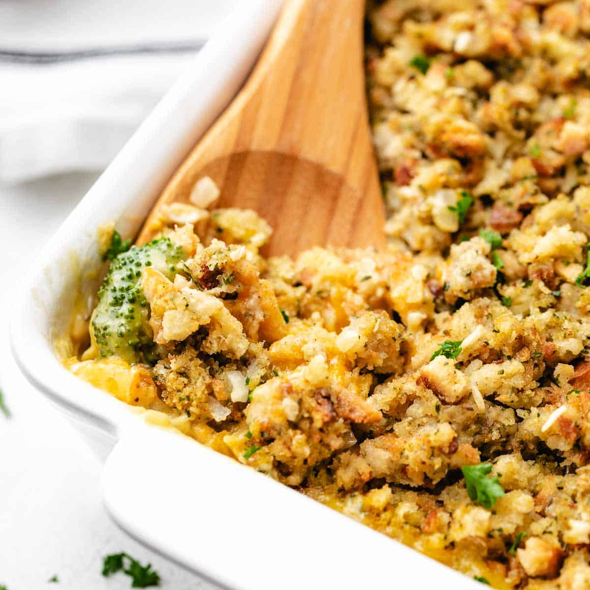

Home
Contest-winning Broccoli Chicken Casserole

Broccoli Chicken Casserole
This is a quick, easy, and inexpensive recipe that everyone is sure to love, even my picky eater loves it!
Ingredients
- 1- 6 oz. pkg. chicken stuffing mix
- 2 cups cubed cooked chicken
- 1 cup frozen broccoli florets, thawed (can use fresh broccoli if wanted)
- 1- 10 3/4 oz. can condensed broccoli cheese soup, undiluted.
- 1 cup shredded cheddar cheese
Steps
- Preheat oven to 350 degrees
- Prepare stuffing mix according to package, using 1 1/2 cups of water
- In large bowl, combine chicken, broccoli, and soup
- Transfer to greased 11x7-in. baking dish. Top with stuffing and sprinkle with cheese.
- Bake, covered, for 20 mins.
- Uncover and bake until heated through for 10-15 mins. longer